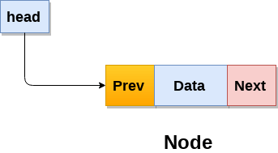
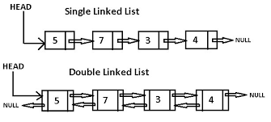

Theory
A Doubly Linked List is a Linked List which has connection pointer to each of its previous element and is generally defined as "prev"
Thus, a node in Doubly Linked Pointer consists of following:
1) next pointer => contains the address of next node of the DLL.
2) data elements => contains the information of the node of DLL.
3) prev pointer => contains the address of the previous node of the DLL.
Declaration:
class classname
{
datatype data1,....; //data elements
classname *next; //next pointer
classname *prev; //previous pointer
}

